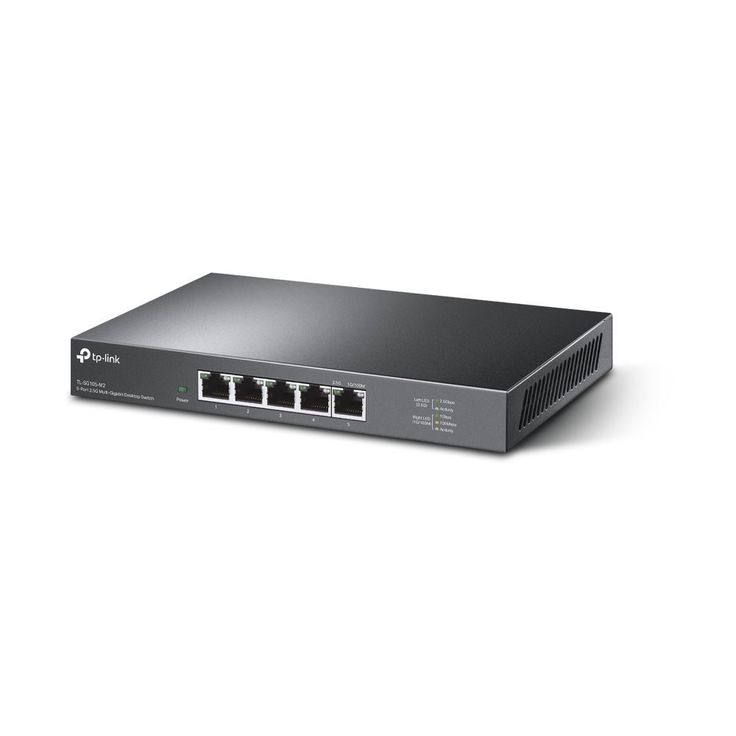
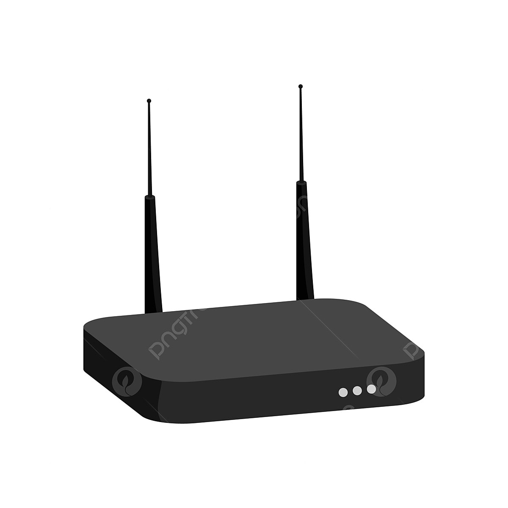

Mutiara Cinta Pratiwi
Nim: 607012500040
Kelas: 49-04
Matkul: Jaringan Komputer
Jurusan: D3 Sistem Informasi
Tujuan Website
Website ini dibuat sebagai media untuk menyelesaikan assesment pembelajaran sekaligus sebagai sarana edukatif yang membahas perangkat jaringan komputer. Melalui website ini, diharapkan pengguna dapat memahami konsep dasar, fungsi, serta peran berbagai perangkat jaringan secara sistematis dan mudah dipahami. Selain itu, website ini juga bertujuan untuk meningkatkan pemahaman praktis dan teoritis mengenai jaringan komputer sebagai bekal pembelajaran dan pengembangan kompetensi di bidang teknologi informasi.
Perangkat Jaringan
Router

Menghubungkan beberapa jaringan dan mengatur lalu lintas data.
Switch
Menghubungkan perangkat dalam satu jaringan lokal.
Access Point

Menyediakan akses jaringan nirkabel (WiFi).
Modem
Menghubungkan jaringan lokal ke jaringan internet.